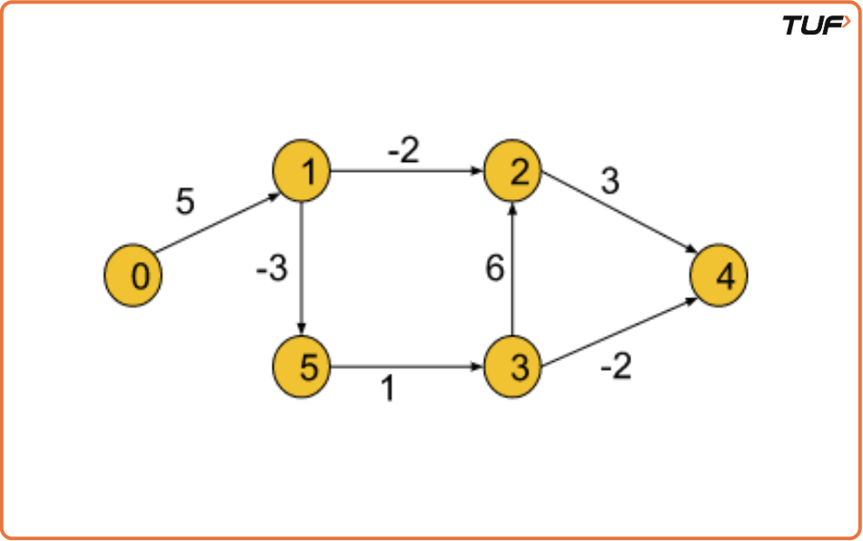
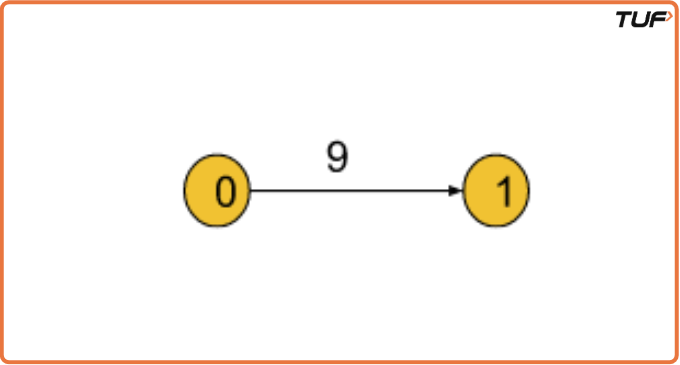
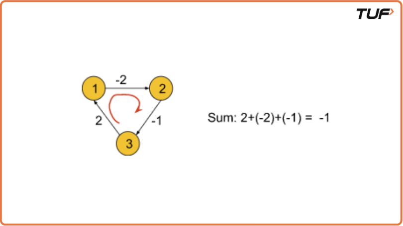
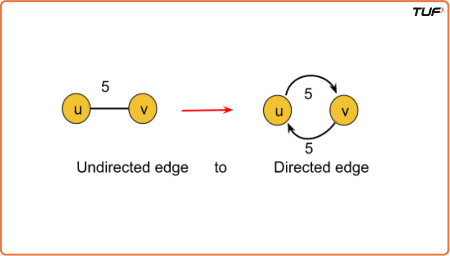
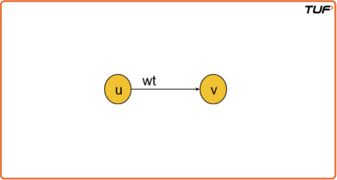
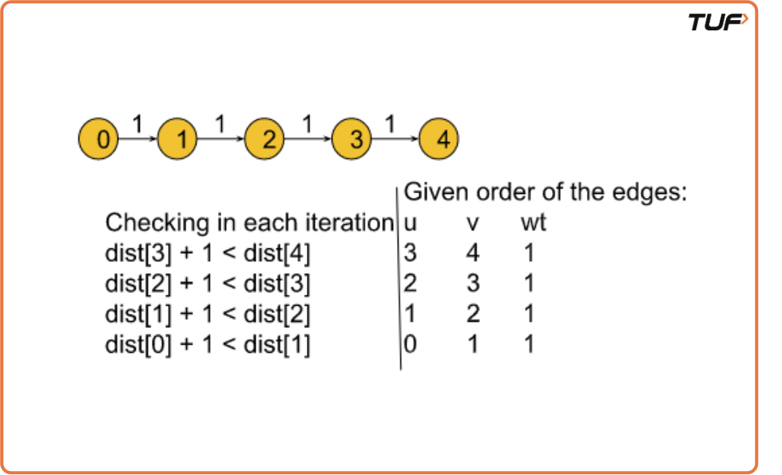

Bellman Ford Algorithm: G-41
Problem Statement: Given a weighted, directed and connected graph of V vertices and E edges, Find the shortest distance of all the vertices from the source vertex S. Note: If the Graph contains a negative cycle then return an array consisting of only -1.
Examples
Example 1: Input Format: V = 6, E = [[3, 2, 6], [5, 3, 1], [0, 1, 5], [1, 5, -3], [1, 2, -2], [3, 4, -2], [2, 4, 3]], S = 0
Result: 0 5 3 3 1 2 Example 2: Input Format:V = 2, E = [[0,1,9]], S = 0
Result: 0 9 Explanation: Shortest distance of all nodes from the source node is returned.
Disclaimer: Here is the practice link to help you assess your knowledge better. It's highly recommend trying to solve it before looking at the solution.
Approach
Algorithm
Bellman-Ford Algorithm
- Finds the shortest paths from one starting point to all other points. Works even when there are negative edge weights and can detect negative cycles (unlike Dijkstra).
- Where Dijkstra Fails: When there are negative edges or a negative cycle because it may loop forever or give incorrect results.
- Negative Cycle: A cycle where the total path weight is negative, causing the distance to decrease endlessly.
Why Bellman-Ford? It works with negative edges and can detect negative cycles. For undirected graphs, treat each edge as two directed edges.
Intuition
- Go through all edges multiple times to update the shortest distances. After repeating this process for the number of nodes minus one, the shortest paths are found.
- Relaxation: If taking a certain edge gives a shorter path to a point, update that point with the new shorter distance.
- Why Repeat N-1 Times? Because the shortest path to any point can involve at most one less edge than the total number of points.
Detecting a Negative Cycle
- After finishing the updates, go through all edges one more time:
- If any distance can still be reduced, a negative cycle exists.
- If not, the shortest distances are correct.
- Start by setting the distance of the starting point to zero and all other points to infinity (unknown large value).
- Repeat the process of updating distances for all edges, one by one, for the number of points minus one times.
- Go through all edges one more time to check if a negative cycle exists.
- Return all shortest distances if no negative cycle is found; otherwise, report that a negative cycle exists.




Code
#include <bits/stdc++.h>
using namespace std;
class Solution {
public:
/* Function to implement Bellman Ford
* edges: vector of vectors which represents the graph
* S: source vertex to start traversing graph with
* V: number of vertices
*/
vector<int> bellman_ford(int V, vector<vector<int>>& edges, int S) {
vector<int> dist(V, 1e8);
dist[S] = 0;
for (int i = 0; i < V - 1; i++) {
for (auto it : edges) {
int u = it[0]; //Starting point of the edge
int v = it[1]; //Ending point of the edge
int wt = it[2]; //Edge weight
if (dist[u] != 1e8 && dist[u] + wt < dist[v]) {
dist[v] = dist[u] + wt;
}
}
}
// Nth relaxation to check negative cycle
for (auto it : edges) {
int u = it[0];
int v = it[1];
int wt = it[2];
if (dist[u] != 1e8 && dist[u] + wt < dist[v]) {
return { -1};
}
}
return dist;
}
};
int main() {
int V = 6;
vector<vector<int>> edges(7, vector<int>(3));
edges[0] = {3, 2, 6};
edges[1] = {5, 3, 1};
edges[2] = {0, 1, 5};
edges[3] = {1, 5, -3};
edges[4] = {1, 2, -2};
edges[5] = {3, 4, -2};
edges[6] = {2, 4, 3};
int S = 0;
Solution obj;
vector<int> dist = obj.bellman_ford(V, edges, S);
for (auto d : dist) {
cout << d << " ";
}
cout << endl;
return 0;
}Complexity Analysis
Time Complexity: O(V*E), where V = no. of vertices and E = no. of Edges.
Space Complexity: O(V) for the distance array which stores the minimized distances.